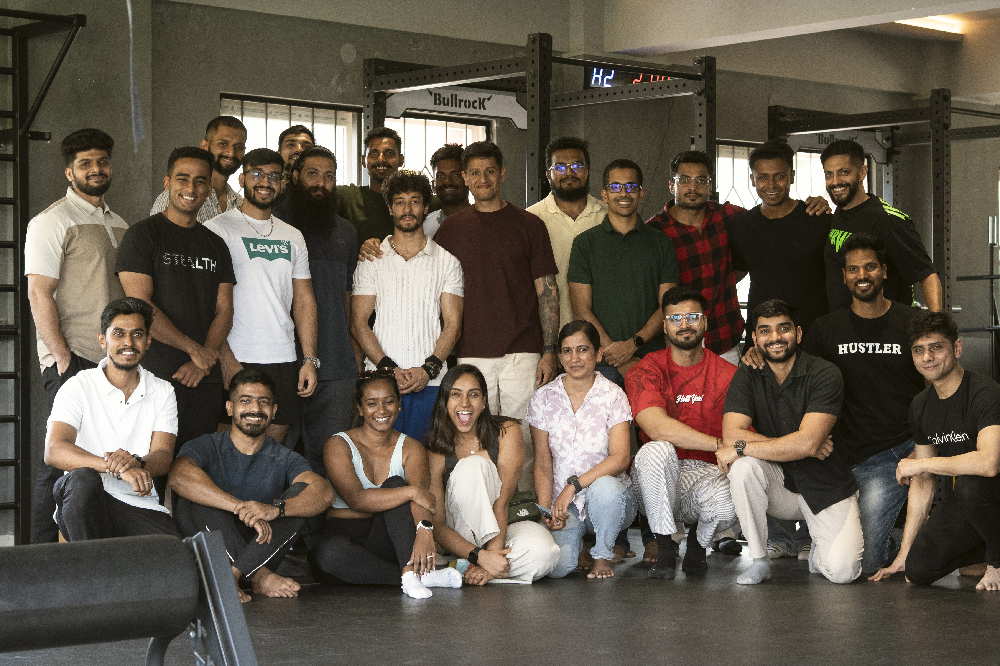
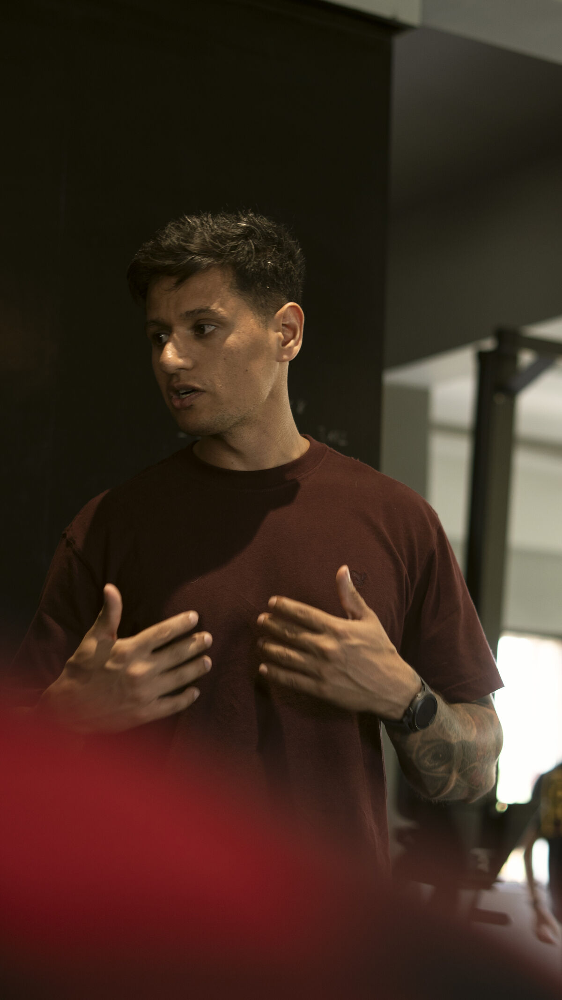
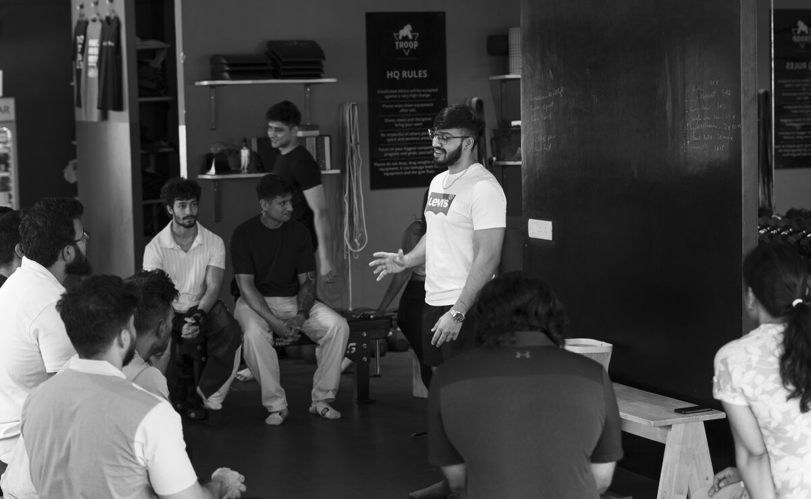
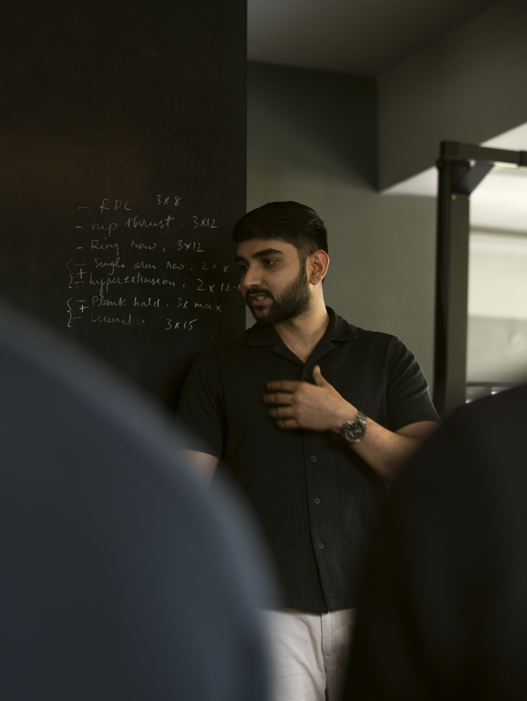
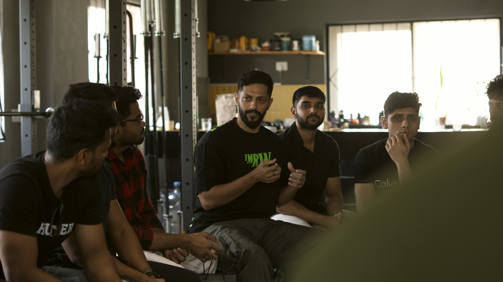
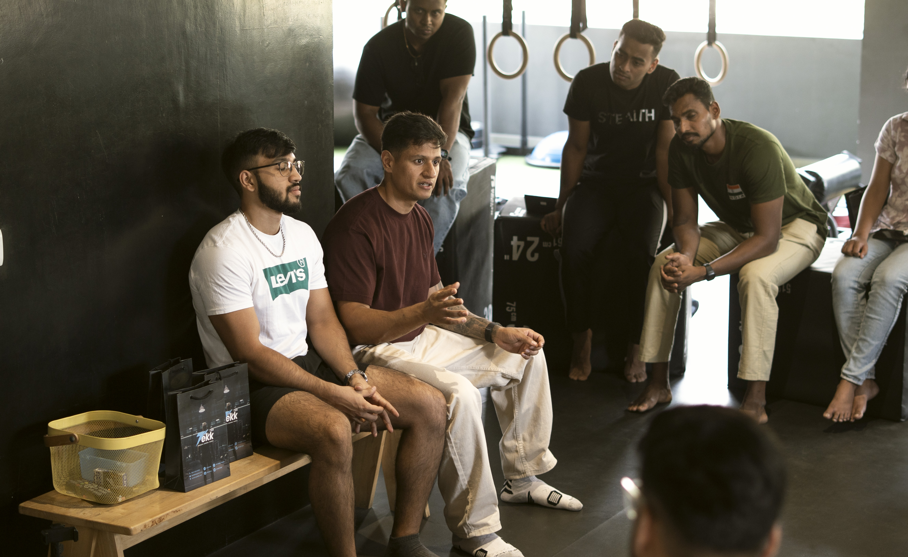
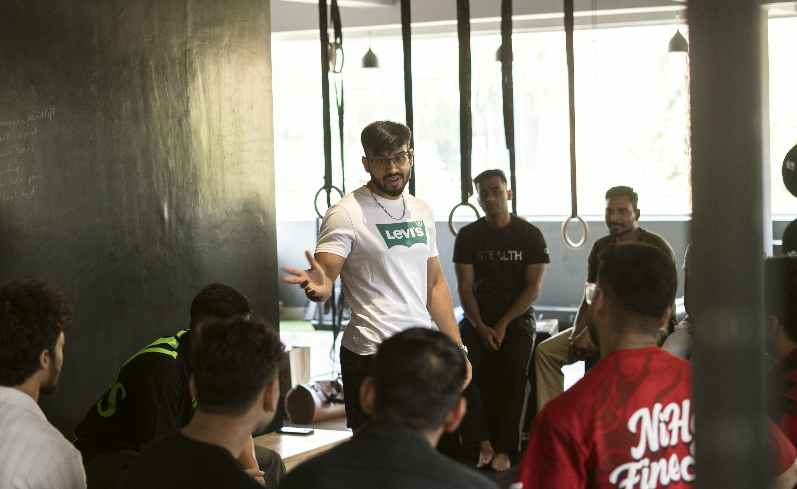

Rigorous science for
human energy.
Nutrition Codes Academy was built to create a new standard of mastery in health and fitness coaching — grounded not in trends, but in the rigor of real science.

Nutrition Codes Academy was built to create a new standard of mastery in health and fitness coaching — grounded not in trends, but in the rigor of real science.
Our Story
Built by Coaches Who Chose Understanding Over Noise

We started where most people in this industry start — working hard, following what we were taught, and trying to do right by the people we coached. But over time, a pattern became clear. People were putting in effort, yet progress was inconsistent. Coaches were following systems but struggling to adapt when things did not go as planned. There was information everywhere, but very little clarity on how to actually apply it.
We watched clients follow generic meal plans and see no results. We watched trainers recycle the same advice without understanding why it worked for some and failed for others. The industry was loud, but it was not deep. That gap between effort and understanding is exactly where Nutrition Codes Academy was born.
The problem was never effort. It was understanding. Most of what we saw being taught was surface-level — enough to begin, but not enough to sustain real, long-term results. We stepped back and rebuilt how we approached everything: nutrition science, resistance training principles, and human physiology. Not to collect more information, but to understand the mechanisms properly.
We spent years studying research papers, attending seminars, and testing protocols on real clients. We learned that the difference between a good coach and a great one is not how much they know — it is how well they understand what they know. That realization changed everything for us.


That shift changed how we worked entirely. Decisions became clearer because we understood the "why" behind every protocol. Adjustments became more precise because we could read the signals the body was giving us. Results became more consistent because we were no longer throwing things at the wall and hoping something stuck.
Most importantly, we were no longer guessing. Every recommendation, every coaching decision was grounded in understanding — not trends, not shortcuts, and not what was popular on social media that week. We developed a framework that worked across different body types, lifestyles, and goals because it was built on principles, not templates.
Nutrition Codes Academy was built from that exact experience. We are coaches and trainers who wanted a better standard of education — for ourselves first, and then for others who were walking the same path we once did. We did not want to create another course that simply dumps information on you. We wanted to build something that teaches you how to think.
Not driven by volume. Not built around trends. But focused on clarity, depth, and real-world application. We wanted to create the kind of program we wish existed when we were starting out — one that does not just tell you what to do, but explains why it works so you can adapt it to any client, any goal, any situation.


Our vision is simple yet ambitious — to help people understand what they are doing so they can make better decisions independently. Whether you are a practicing coach looking to level up, an aspiring trainer taking your first steps, or someone trying to take control of your own health, this academy was built for you.
We believe the fitness industry needs fewer influencers and more educators. Fewer templates and more thinkers. If you value understanding over shortcuts, if you want to know the "why" behind every "what," you will feel at home here. Our graduates do not just follow protocols — they design them.
What makes NCA different is not just what we teach — it is who we attract. Our community is made up of serious learners who ask hard questions, challenge assumptions, and support each other's growth. From our private study groups to our live Q&A sessions, you are never learning alone.
We have built a network of coaches across India who share research, discuss cases, and hold each other accountable. When you join NCA, you are not just enrolling in a course. You are joining a tribe of professionals committed to raising the standard of coaching in this country.
Apply for Mentorship arrow_forward
What Sets Us Apart
Unlike generic courses, we go far beyond surface-level concepts.
Every topic is broken down into simple, actionable frameworks that you can immediately apply in real life. No fluff — just practical, usable knowledge.
You're not just learning about nutrition and exercise, but also exploring coaching psychology, social media growth, and research literacy.
We integrate real case studies, giving you the chance to see how theory translates into practical solutions for real clients.
And most importantly, you'll never be alone — through our strong community and personal mentorship, you'll learn alongside peers and be guided by professionals who have already walked the same path.
Purpose & Direction
To equip health and fitness coaches with the deepest, most rigorous scientific foundation available — transforming them from generalists into specialists capable of producing extraordinary, repeatable results for every client they serve.
A world where every health decision is guided by science. We envision a global network of NCA-trained coaches who collectively raise the standard of care in nutrition and fitness, making evidence-based health accessible to everyone — regardless of geography or background.
What Sets Us Apart
Traditional Certs
close Generalized dietary guidelines
NCA Mastership
check Personalized metabolic coding
Traditional Certs
close Outdated PDF textbooks
NCA Mastership
check Real-time clinical research
Traditional Certs
close Multiple-choice exams
NCA Mastership
check Live case-study defense
Traditional Certs
close Passive forum support
NCA Mastership
check Dedicated mentor access
The People Behind It

Clinical Biochemistry & Nutrition
MBBS, MD (Biochemistry). A clinical biochemist working at the intersection of lab science and nutrition, Dr. Saikiran trains NCA coaches to interpret blood reports and translate metabolic data into real-world coaching strategies.
photo_camera @dr_saikiran_mdJoin hundreds of scholars who have transformed their coaching practice with the deepest science education available.